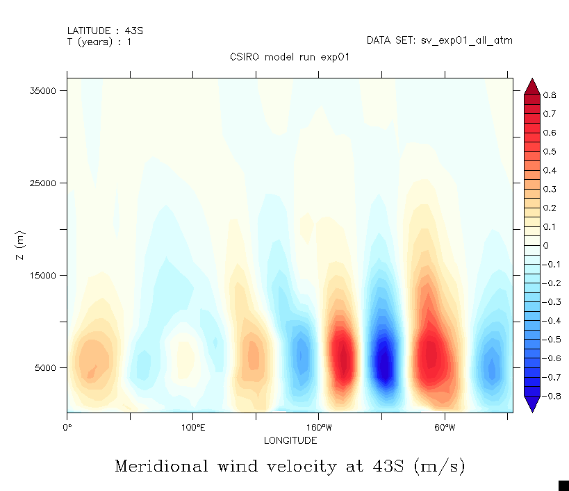

class: center, middle # Topic 3: Atmospheric circulation MATH3261/5285: Fluids, Oceans, and Climate [{Shane Keating}](https://srkeating.com/), School of Mathematics and Statistics UNSW Sydney, Term 1 2019 .footnote[Created with [{Remark.js}](http://remarkjs.com/) using [{Markdown}](https://daringfireball.net/projects/markdown/) + [{MathJax}](https://www.mathjax.org/)] --- class: middle, left # 2.1 A brief overview of atmospheric circulation > "The storm is up, and all is on the hazard." > William Shakespeare, *Julius Caesar* Act V Scene 1. --- class: middle, center **General circulation** = large-scale motion of the atmosphere `$$\begin{align*} & 1000 \; \mbox{km} \qquad \longrightarrow & 10000 \; \mbox{km} \\ & \mbox{synoptic scale} \qquad & \mbox{planetary scale} \end{align*}$$` --- class: middle, center ## Radiative equilibrium What would the temperature be if there was no atmosphere or ocean? <img src="radiative-equilibrium.png" align="center" width="50%"/> Assume that each point on Earth's surface absorbs incoming solar radiation and radiates as a "black body" with a temperature given by the **Stefan-Boltzmann law** `$$S_\mbox{in} ( \theta ) \left( 1 - \alpha \right) = \sigma \, T_\mbox{rad}^4 \left( \theta \right),$$` where $\alpha$ is the albedo and $\sigma = 5.67 \times 10^{-8} \; \mbox{W m}^{-2} \mbox{K}^{-4}$. --- class: left (Credit: Vallis 2006) -- **Emitting temperature** (outgoing radiation) has weaker pole-to-pole gradients than **radiative equilibrium temperature** (incoming radiation) -- Heat is redistributed away from equator towards poles -- Large-scale circulation in the atmosphere and ocean moves warm air/water towards poles and cool air/water towards equator, eroding gradient imposed by radiative forcing. --- class: middle, center ## Temperature and pressure vs height (Credit: European Space Agency) --- class: left **Troposphere (0 km to 8-18 km)** - monotonic *decrease* of temperature with height - **tropopause** (top of troposphere) changes height with latitude and season - contains about 80% of the mass of the atmosphere -- **Stratosphere (to 50 km)** - temperature *increases* with height due to absorption of solar radiation by ozone layer - contains about 19.9% of the mass of the atmosphere -- **Mesosphere, Thermosphere, and Exosphere (>50 km)** - temperature decreases with height then increases again - very tenuous / little mass --- class: middle, center ## Temperature and wind fields Temperature averaged in the zonal direction (east-west) --- class: middle, center ## Temperature and wind fields Zonal wind (east-west) averaged in the zonal direction --- class: middle, center ## Temperature and wind fields Meridional (north-south) wind averaged in the zonal direction  --- class: left Tropopause bulges upward at equator Strong meridional temperature gradients at subtropics - drives an eastward **zonal jet** because of thermal wind balance Convergence/divergence of meridional wind leads to upwelling and downwelling of air. Surface winds are *not* due to thermal wind balance, but caused by alternating overturning cells --- class: middle, center ## Overturning circulation --- class: middle, left ## Zonally asymmetric winds - Zonal average ignores zonal asymmetries (good in tropics, not so good in mid-latitudes) - Midlatitude (polar) jet stream has strong meanders due to propagating **Rossby waves** - If these meanders grow and detatch, they produce cyclones and anticyclones, aka **weather** [{Youtube movie of Rossby waves}](https://www.youtube.com/watch?v=6UCiRIc0nK0) --- class: middle, left # 2.2 The Hadley Cell > "The answer, my friend, is blowin' in the wind." > Bob Dylan --- class: middle, center (Credit: G. Vallis) --- class: middle, center --- class: middle, left # 2.3 Shallow water waves > "Is there any peace > In ever climbing up the climbing wave?" > Alfred, Lord Tennyson, *The Lotus-eaters* --- class: middle, center (Credit: I. Simpson) --- class: middle, left # 2.4 Rossby waves > "Perhaps I occasionally sought to give, or inadvertently gave, to the student a sense of battle on the intellectual battlefield. If all you do is to give them a faultless and complete and uninhabited architectural masterpiece, then you do not help them to become builders of their own." > Carl-Gustaf Rossby --- class: middle, center --- class: middle, center --- class: middle, center --- class: middle, center --- class: middle, center